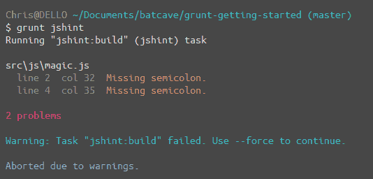

Установка и настройка Grunt
Чтобы задать настройки для Grunt мы воспользуемся файлом Gruntfile.js. Это то место, где по умолчанию хранится конфигурация для запуска.
Базовый Gruntfile
Перейдём к Gruntfile.js и добавим в него основные вещи, которые нужны для нашего проекта.
// Gruntfile.js
// наша функция-обёртка (требуется для Grunt и его плагинов)
// все настройки располагаются внутри этой функции
module.exports = function(grunt) {
// ===========================================================================
// НАСТРОЙКА GRUNT ===========================================================
// ===========================================================================
grunt.initConfig({
// получить конфигурацию из package.json
// так мы можем использовать штуки вроде name и version (pkg.name)
pkg: grunt.file.readJSON('package.json'),
// вся наша конфигурация будет здесь
});
// ===========================================================================
// ЗАГРУЗКА ПЛАГИНОВ GRUNT ===================================================
// ===========================================================================
// мы можем их загрузить, только если они находятся в нашем package.json
// убедитесь, что вы запустили npm install, чтобы наше приложение могло их найти
grunt.loadNpmTasks('grunt-contrib-jshint');
grunt.loadNpmTasks('grunt-contrib-uglify');
grunt.loadNpmTasks('grunt-contrib-less');
grunt.loadNpmTasks('grunt-contrib-cssmin');
grunt.loadNpmTasks('grunt-contrib-watch');
};Настройка пакета
Базовая конфигурация Grunt готова и теперь взглянем на настройки одного из наших пакетов. Начнём с пакета JSHint который анализирует наши файлы JavaScript и сообщит о возникновении каких-либо ошибок. Это способ указать Grunt, какие файлы мы хотим анализировать, минимизировать или сделать с ними что-то ещё. Для настройки пакета переходим в раздел grunt.initConfig(), который содержит следующую базовую структуру:
// Gruntfile.js
grunt.initConfig({
// настройка jshint для валидации JS-файлов
jshint: {
options: {
reporter: require('jshint-stylish') // используйте jshint-stylish для наглядного представления ошибок
},
// при запуске этой задачи анализируется файл Gruntfile.js и все JS-файлы в src
build: ['Gruntfile.js', 'src/**/*.js']
}
});Это основной формат для настройки наших пакетов. В нём происходит:
- Вызов пакета по его имени (jshint).
- Настройка параметров, если они нужны. Обычно их можно найти в документации для каждого конкретного пакета.
- Создание атрибута build и переход к файлам, папкам или куда-то ещё при желании.
Соглашения по именам
При обозначении задач мы назовём нашу главную задачу build. Вы можете назвать её как пожелаете и к тому же создать несколько задач. При запуске Grunt все задачи будут выполнены автоматически. Если вы хотите создать задачи через настройку jshint, то можете назвать их dev и production. Тогда позднее мы можем вызвать задачу через jshint:dev или jshint:production. Теперь, когда мы рассмотрели базовую настройку пакета Grunt, перейдём к конфигурации наших задач.
Анализ JavaScript-файлов
Вот конфигурация для анализа файлов JavaScript. Она такая же, как и в приведённом выше примере. Мы также обращаемся к пакету jshint-stylish, чтобы получить наглядный вывод ошибок.
// Gruntfile.js
grunt.initConfig({
// настройка jshint для валидации JS-файлов
jshint: {
options: {
reporter: require('jshint-stylish') // используйте jshint-stylish для наглядного представления ошибок
},
// при запуске этой задачи анализируется файл Gruntfile.js и все JS-файлы в src
build: ['Gruntfile.js', 'src/**/*.js']
}
});Добавим некоторый JS в файл src/js/magic.js.
// src/js/magic.js
var hello = 'Я есть Grunt!'
var awesome = 'Да, это здорово!'Теперь если мы выполним
$ grunt jshintв командной строке, то увидим анализ Gruntfile.js и всех JS-файлов внутри папки src.

Мы можем указать следить за всеми JS-файлами в нашем приложении, определёнными файлами или всеми файлами в данной папке с помощью ** для всех папок и * для всех файлов. С анализом закончили, теперь перейдём к минимизации.

Все материалы сайта доступны по лицензии Creative Commons «Attribution-NonCommercial» («Атрибуция — Некоммерческое использование») 4.0 Всемирная, если не указано иное.